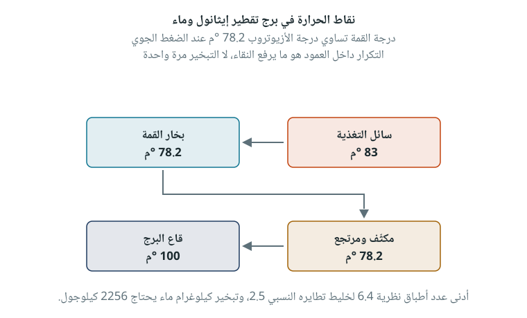

التقطير
Distillation
فصل مكوّنات سائل بتبخير جزئي وتكثيف متكرر، يعتمد على فرق التطاير وليس على فرق الغليان وحده، ويُقاس عدد أطباقه النظري من توازن البخار–السائل.
التقطير عملية فصل تعتمد على أن البخار المتكوّن فوق سائل خليط أغنى بالمكوّن الأكثر تطايرًا من السائل نفسه. يُغلى الخليط جزئيًّا، فيصعد بخار بتركيب مختلف، ثم يُكثَّف، ثم يُغلى جزئيًّا مرة أخرى. تكرار الدورتين معًا هو ما يرفع النقاء؛ فالتقطير البسيط يكرّرها مرة، والتقطير المجزّأ يكرّرها عشرات المرات داخل عمود واحد.
يتحدّد الفصل بشيئين: كم يختلف تركيب البخار عن تركيب السائل عند التوازن، وهو ما يقيسه التطاير النسبي، وكم مرة يُعاد التكرار، وهو ما يقيسه عدد الأطباق النظرية. تُسمّى كل درجة تكرار طبقًا نظريًّا، ويُقاس أداء العمود بعدد الأطباق المكافئة لا بارتفاعه.
الطاقة هي الكلفة الأولى: كل كيلوغرام ماء يُبخَّر يحتاج 2256 كيلوجول عند 100 °م، ولهذا يُعاد جزء من المكثَّف إلى القمة بوصفه ارتجاعًا لتحسين النقاء بدل إضافة أطباق جديدة، وهي مقايضة اقتصادية صريحة بين الطاقة ورأس المال.
كيف تعمل الظاهرة؟
عند غليان خليط مثالي، يكون الضغط الجزئي لكل مكوّن مساويًا لضغط بخاره النقي مضروبًا في كسره المولي، ومجموع الضغطين الجزئيين يساوي الضغط الكلي. ينتج من ذلك أن كسر المكوّن الأكثر تطايرًا في البخار أعلى من كسره في السائل. عندما يصعد هذا البخار ويلمس سائلًا أبرد على الطبق الأعلى، يتكثّف جزء منه مطلقًا حرارة، وتتبخّر من السائل كمية أغنى بالمكوّن التطاير، فيتكرّر الإثراء صعودًا. كل طبق ينقل كتلة بين الطورين حتى يقتربا من التوازن، والعمود كله سلسلة من هذه المقاربات المتتابعة.
العلاقة بالأرقام
التطاير النسبي α = (y_A/x_A) ÷ (y_B/x_B). لأدنى عدد أطباق نظرية عند ارتجاع كلي تُستخدم معادلة فنْسكه: N_min = ln[(x_D/(1−x_D))·((1−x_B)/x_B)] ÷ ln α. عند α = 2.5 ونقاء قمة x_D = 0.95 وقاع x_B = 0.05 يكون البسط ln(361) = 5.889 والمقام ln(2.5) = 0.916، فينتج N_min = 6.4، أي سبعة أطباق نظرية على الأقل. وعلى جانب الطاقة: تبخير كيلوغرام ماء عند 100 °م يحتاج 2256 kJ، أي 0.627 kWh لكل كيلوغرام.
مفاهيم متقاربة
الخلط الأول بين التقطير والتبخير: التبخير يزيل المذيب ويتخلّص منه، والتقطير يستعيده ويكرّر استخدامه، والهدف مختلف. الثاني بين الطبق النظري والطبق الحقيقي: الطبق الفعلي لا يبلغ التوازن، وكفاءته عادة بين النصف والثمانين بالمئة، فعمود بسبعة أطباق نظرية قد يحتاج عشرة أطباق حقيقية. الثالث بين فرق درجة الغليان والتطاير النسبي: خليط بفارق غليان صغير قد يكون سهل الفصل إذا كان α كبيرًا، وآخر بفارق كبير قد يكون صعبًا. الرابع أن التقطير لا يفصل الأزيوتروب: عند التركيب الأزيوتروبي يتساوى تركيب البخار وتركيب السائل، فتتوقف الإثراء مهما زاد عدد الأطباق.
حدود التطبيق
يفترض حساب فنْسكه ارتجاعًا كليًّا وعمودًا مثاليًّا، وهو حدّ أدنى لا تصميم. وفي التصميم الفعلي يُفترض ثبات التدفق المولي على طول العمود، وهذا يفشل عند فروق حرارة كامنة كبيرة بين المكوّنين. وقانون راؤول الذي يبني منحنى التوازن صالح للمخاليط المثالية، أما الإيثانول والماء فهما غير مثاليين بدرجة كبيرة ويحتاجان معاملات نشاط مقيسة، وإلا أخطأ الحساب موضع الأزيوتروب. كما أن التخلخل يخفض درجة الغليان ويرفع α، فينتقل التصميم كله إذا تغيّر الضغط.

| الكمية | القيمة | المصدر |
|---|---|---|
| حرارة تبخير الماء عند 100 °م | 2256 كيلوجول/كيلوغرام | [2] |
| الطاقة اللازمة لتبخير كيلوغرام ماء | 0.627 كيلوواط·ساعة/كيلوغرام | [2] |
| عدد الأطباق النظرية عند α = 2.5 وx_D = 0.95 وx_B = 0.05 | 6.4 طبق | [1] |
| ضغط بخار الماء عند 60 °م | 19.9 كيلوباسكال | [3] |
المصادر
- 1 Chemistry 2e — 10.3 Phase Transitions — OpenStax, Rice University. openstax.org/books/chemistry-2e/pages/10-3-phase-transitions · اطُّلع عليه 2026-11-16
- 2 Liquids — Latent Heat of Evaporation — The Engineering ToolBox. www.engineeringtoolbox.com/fluids-evaporation-latent-heat-d_147.html · اطُّلع عليه 2026-11-16
- 3 Liquids — Vapor Pressures — The Engineering ToolBox. www.engineeringtoolbox.com/vapor-pressure-d_312.html · اطُّلع عليه 2026-11-16
استشهد بهذا المصطلح
الصيغتان مبنيتان من بيانات الصفحة نفسها: العنوان والتاريخ ورابط النسخة المنشورة.
التقطير — Distillation. (2026). ديوان المعرفة — انفراد. https://infiradev.com/diwan/terms/distillation.html
@misc{distillation2026,
title = {التقطير},
titleaddon = {Distillation},
howpublished = {{ديوان المعرفة — انفراد} — مرجع علمي عربي},
year = {2026},
url = {https://infiradev.com/diwan/terms/distillation.html},
urldate = {2026-11-16},
note = {مراجعة علمية: مراجعة آلية — ديوان المعرفة (روابط المصادر + عقد المحتوى + وجود الرسم) 2026-11-16}
}
راجعه: مراجعة آلية — ديوان المعرفة (روابط المصادر + عقد المحتوى + وجود الرسم) 2026-11-16 · 2026-11-16 · آخر تحديث 2026-11-16